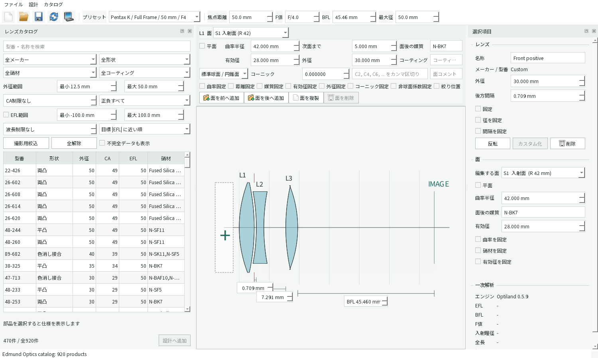
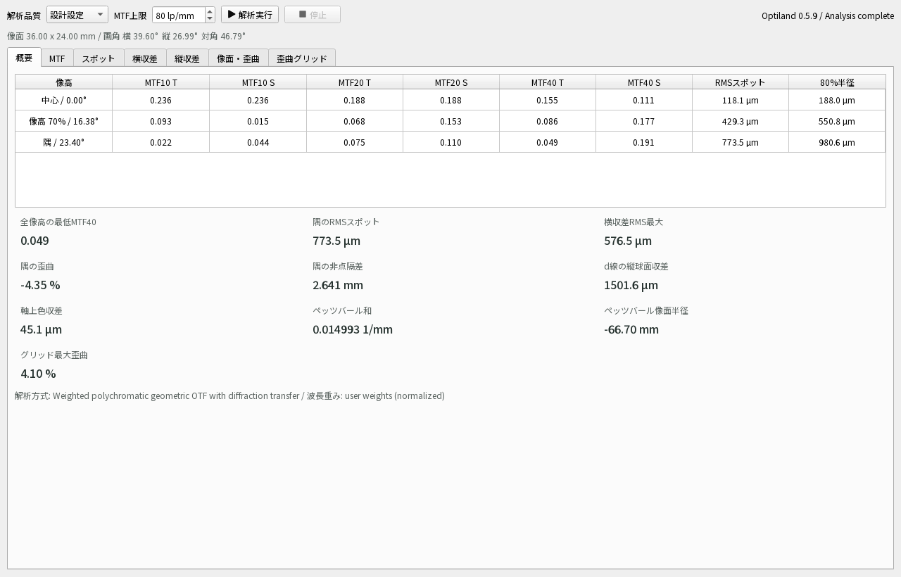
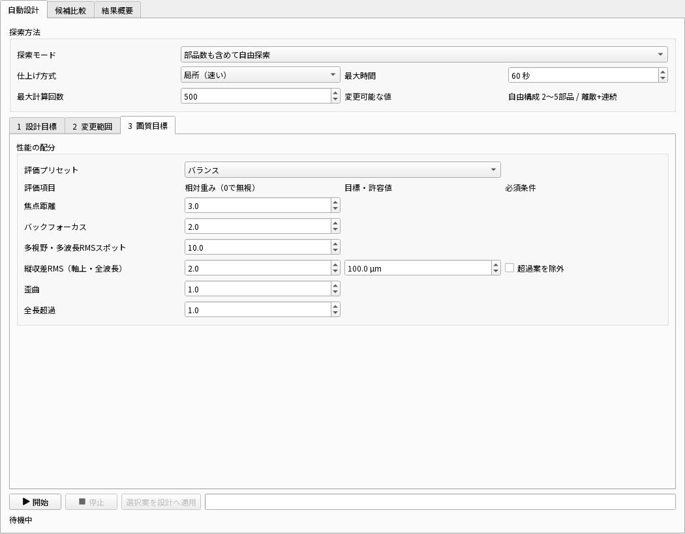

上部: 設計全体
保存、元に戻す、光学計算、性能評価、像面・光線条件、自動設計があります。焦点距離、開口、BFL、最大径もここで指定します。
最短ルート
KiraKiraLensは、中央のレンズ構成図を触って設計します。数値を変えただけでは重い性能計算を始めません。構成を作り、一次計算を確認し、必要なときだけ性能評価を実行します。
.kklens として保存します。自動設計の前にも一度保存します。
保存、元に戻す、光学計算、性能評価、像面・光線条件、自動設計があります。焦点距離、開口、BFL、最大径もここで指定します。
メーカー、形状、硝材、外径、有効径、EFLなどで市販品を絞ります。選択した部品が、挿入・置換の対象です。
面、レンズ本体、空気間隔、像面をクリックします。右クリックで、その場所に合う操作が出ます。
選択中のレンズや面を数値編集します。下部には実際に計算されたEFL、BFL、F値、画角などが表示されます。
図が小さくなったとき: メニューの設計 → 全体表示を使います。細部はホイールで拡大し、ドラッグで移動できます。
| したいこと | 操作 |
|---|---|
| 末尾へ追加 | カタログで行を選択し、設計へ追加または行をダブルクリック。 |
| レンズ間へ挿入 | カタログで行を選択し、構成図の空気間隔を右クリックして選択中のカタログレンズを挿入。 |
| L1より物体側へ挿入 | 構成図左端の「+」領域を右クリックし、選択中のカタログレンズをL1の前へ挿入。 |
| 今のレンズを置換 | 先にカタログの行を選択し、置換したいレンズ本体を右クリックして選択中のカタログレンズに置換。 |
| 表裏を変更 | レンズ本体を右クリックしてレンズを反転。曲率符号、面順、硝材順もまとめて反転します。 |
| クリックする場所 | 主に変更できるもの | よく使う右クリック操作 |
|---|---|---|
| レンズの曲面 | 曲率半径、面後の媒質、有効径、コーニック、非球面係数、コーティング | 面の追加・複製・削除、平面/球面切替、曲率固定、絞り位置 |
| レンズ本体 | 名称、外径、後方間隔、各種固定 | 複製、反転、カタログ品へ置換、カスタム化、前後へ挿入、削除 |
| レンズ間の空白 | 空気間隔、最小値、最大値、間隔固定 | 0 mm、固定切替、絞り位置、カタログ/カスタムレンズ挿入 |
| IMAGEの線 | センサー寸法、像面距離、物体距離、視野、波長、光線数 | 像面・光線条件を編集 |
カタログ品の処方は、型番との対応を守るため直接変更できません。対象レンズを選択してカスタム化を押すと、メーカー・型番から独立した編集可能なコピーになります。
構成図下の寸法欄、または間隔をクリックしたときに出る上部の間隔欄へmm単位で入力します。ドラッグは大まかな移動、数値欄は最終調整に使います。最後のレンズ後方の間隔がBFLです。
固定した値は自動設計で変更されません。残したい曲率、硝材、径、レンズ順、空気間隔、像面位置を先に固定します。すべて固定すると自動設計の変更可能な値がなくなるため、必要な自由度は残します。
構成図のIMAGE線をクリックするか、上部の像面・光線条件を開きます。設定変更後は適用を押します。
センサープリセットまたは幅・高さを設定します。フルフレームは36 × 24 mm、対角隅の像高は約21.63 mmです。像面を最良焦点へ追従をオンにすると、処方変更後に近軸最良焦点へ動きます。
通常の写真レンズは像側F値が分かりやすい指定です。実測した物体側瞳径を合わせるなら入射瞳径、実絞りの穴寸法を固定するなら絞り面の半径を使います。
通常はセンサー対角の最大画角を使い、像高比0、0.7、1.0で中心・中間・隅を評価します。特定角度を調べるときは任意の半画角へ切り替えます。
最初は写真光学で一般的なFraunhofer F-d-Cを使います。青486.13 nm、主波長の黄587.56 nm、赤656.27 nmです。撮像RGBや独自波長も設定できます。

写真用レンズの良さは1個の数値では決まりません。次の条件を、同じセンサー、焦点距離、F値、物体距離、視野、波長、解析品質で比較します。
良い傾向: 0から1の間で高いほどコントラストを保ちます。40 lp/mmまで高く、中心・中間・隅、T・Sの最低側が揃うほど安定しています。
悪いとき: 像面位置、F値、曲率、空気間隔を調整します。隅だけ悪い場合は絞り位置、像面湾曲、非点収差、径不足も確認します。
良い傾向: 点群、RMS半径、80%半径が小さく、波長色が重なります。Airy円に近い点群は回折限界に近い目安です。
悪いとき: 中心なら球面収差・色収差、隅ならコマ・非点収差・像面湾曲を他の図で切り分けます。
良い傾向: 瞳座標全体で光線誤差が0 µm付近に小さくまとまり、TとS、各波長が近接します。
悪いとき: 曲線形状から中心の球面収差、周辺のコマや非点を見ます。曲線が途中で切れる場合は径、絞り、レンズ衝突を確認します。
良い傾向: 全瞳高の焦点ずれが0 mm付近で縦にまとまり、F・d・C線が近接します。
悪いとき: 同一波長の曲がりは縦球面収差、波長間の横ずれは軸上色収差です。自動設計の縦収差重視または縦収差RMSの重み・許容値を使います。
良い傾向: TとSの焦点ずれが0 mmに近く、2本の隔たりが小さい状態です。縦軸は像高比と実像高mmです。
悪いとき: 両線が同じ方向へ曲がるなら像面湾曲、TとSが離れるなら非点収差を疑います。絞り位置、正負のパワー配分、面の曲率を見直します。
良い傾向: 歪曲率が0%に近く、グリッドが理想格子へ滑らかに重なります。符号は樽型・糸巻型の方向を表します。
悪いとき: 絞り前後のパワー配分と絞り位置を調整します。歪曲は像の形を変えますが、それ単独ではぼけ量を示しません。
良い傾向: 一般に絶対値が小さいほどペッツバール像面は平坦方向です。対応する像面半径は絶対値が大きくなります。
悪いとき: 正負レンズの屈折力配分や高屈折率材を検討します。ただし0に近いだけで、非点収差やMTFが良いとは限りません。
良い傾向: 設定したセンサー全面が、必要な画角と実像高mmで評価されています。フルフレーム隅は約21.63 mmです。
悪いとき: 像高1.0が想定センサー隅と一致しない場合は、像面・光線条件のセンサー寸法と視野指定を見直します。
| 概要の値 | 比較するときの見方 |
|---|---|
| 全像高の最低MTF40 | 高いほどよい。最も悪い視野・方向を代表するため、中心だけ良い案を避けやすい。 |
| 隅のRMSスポット | 小さいほどよい。同じ条件・単位で比較する。 |
| 横収差RMS最大 | 小さいほどよい。どの視野・波長で最大かを横収差タブで確認する。 |
| 隅の非点隔差 | 絶対値が小さいほどT/S焦点差が小さい。 |
| d線の縦球面収差 / 軸上色収差 | 絶対値が小さいほどよい。符号より大きさと曲線形状を見る。 |
| 隅の歪曲 / グリッド最大歪曲 | 絶対値が小さいほど形状再現が素直。用途によって許容範囲を決める。 |
自動設計は現在の設計を出発点にします。先に像面・視野・波長と、残したい部品や値の固定を済ませてください。実行中も元の設計は変更されず、候補を適用したときだけメイン画面へ反映されます。

今の構成を調整を選択。固定していないカスタム曲率・厚さ・空気間隔・像面を連続最適化します。まず局所（速い）を使います。
今の部品数で市販レンズを交換を選択。候補部品、順序、表裏を離散探索し、その後に空気間隔を詰めます。
部品数も含めて自由探索を選択。最小・最大レンズ数、最大分割数、候補数、時間を現実的な範囲に絞って始めます。
古典型から市販レンズを探索を選択。Cooke Triplet、Tessar、Double Gaussから選び、型の正負配置を守ってカタログ候補を探します。
特許例は計算経路や符号規約の検証に便利ですが、掲載された数値が現在の硝材名、コーティング、センサー、製造条件にそのまま対応するとは限りません。読み込み後の警告と出典注記を確認してください。
異常とは限りません。実光線は球面収差、色収差、コマ、非点収差などにより広がります。まず次を順に確認します。
性能評価は設計変更だけでは再計算しません。タイトルに「*」が付いたら結果が古い状態です。解析実行を押してください。一次解析だけならメイン画面の光学計算または F5 です。
有効径不足、絞りが小さすぎる、レンズ曲面の交差、全反射、極端な曲率や間隔を確認します。まずF値を暗くし、径と間隔を増やし、中心視野・主波長だけで成立するか切り分けます。
左のカタログ表で対象行を先に選択してください。挿入は空気間隔または左端の「+」を右クリック、置換はレンズ本体を右クリックします。「不完全データ」の部品は設計へ使えません。
カタログ品は処方保護中です。レンズ本体を選択し、カスタム化してから編集します。
レンズ本体を右クリックしてレンズを削除、または選択項目パネルの削除を押します。面だけを削除する場合、カタログ品は先にカスタム化が必要で、1要素に最低2面は残ります。
局所方式、短い最大時間、少ない評価回数から始めます。メーカー、形状、各位置の候補数、使用レンズ数を絞り、変更不要な要素を固定します。自由探索と大域方式は候補空間が大きいため、成立条件を確認した後に使います。
編集 → 元に戻すまたは Ctrl + Z を使います。大きな自動設計や置換の前には別名保存も行ってください。
| 用語 | 意味 |
|---|---|
| EFL | 有効焦点距離。レンズ全体の焦点距離で、画角を決める主要値。 |
| BFL | 最後のレンズ面の頂点から像面までの距離。マウントやシャッターとの干渉を考える値。 |
| F値 / FNO | 焦点距離と有効な光束径の関係。小さいほど明るい一方、収差補正と径の要求が厳しくなる。 |
| EPD | 入射瞳径。物体側から見た開口絞りの像の直径。 |
| CA | Clear Aperture、有効径。光線を有効に通せる直径。 |
| 像高 | 像面中心から評価点までの距離。1.0は設定センサーの対角隅で、フルフレームでは約21.63 mm。 |
| T / S | TangentialとSagittal。周辺像で異なる方向の結像性能。低い側と2本の隔たりを見る。 |
| RMSスポット | 光線交点の広がりを二乗平均平方根で表した半径。条件が同じなら小さいほど集光が良い。 |
| R80 | 追跡光線の80%を含む幾何学的半径。外れ光線を含む広がりを見る。 |
| 絞り位置 | 光束を制限する面。移動するとコマ、歪曲、周辺光量、レンズ径の要求が変わる。 |
KiraKiraLensの性能評価は、入力した公称処方をOptilandで追跡した設計上の予測です。現物の完成性能を保証する測定ではありません。
MTFは作動距離、F値、センサーサイズ、波長などの条件に依存します。T/Sと複数像高を比較し、低い側を含めて判断する考え方は上記資料に基づきます。